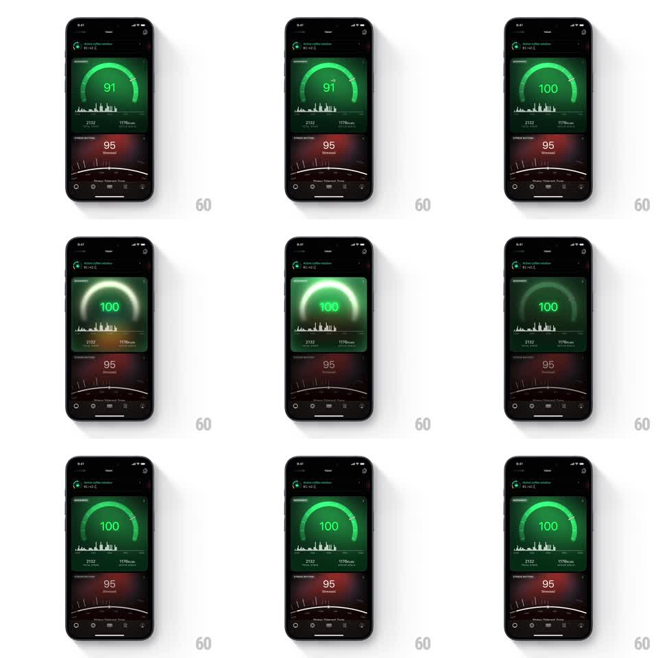

Media
Frame-by-frame

Rebuild this animation 1:1: Ultrahuman's movement score update - the green progress ring pulses with a traveling glow as the score counts up to 100 and the ring completes.

Rebuild this animation 1:1: Ultrahuman's movement score update - the green progress ring pulses with a traveling glow as the score counts up to 100 and the ring completes. ## Integration Integration: stack-agnostic spec - springs given as stiffness/damping, timed motions as duration + curve; map every value to your framework and animation library of choice. ## Scene Dark dashboard: a large segmented green ring (Movement score) with the number inside, sparkline and stats beneath, a red-tinted stress card below, tab bar at the bottom. Only the ring card animates. ## Motion spec Pattern: counting ring pulse, ~1.8s. - The number counts up 91 -> 100 (1.2s, ease-out) while the ring's lit segments extend in lockstep. - A bright glow pulse travels clockwise around the ring (one full lap per ~900ms), blooming the segments it passes (~2x brightness, soft blur). - As the count hits 100 the ring closes and the whole ring flares once (glow radius grows ~40% and settles, 400ms). - Background of the card takes a faint green radial tint that breathes with the pulse (+-10% alpha). - Everything below the ring stays static. ## Calibration - Count, segment fill, and pulse are one clock; any drift between them reads as a rendering bug. - The final flare is a single bloom, not a loop - after settling, the ring is calm. ## Reduced motion Number crossfades to 100, ring fills instantly, single soft glow fade (300ms). ## Don't miss - Segments stay visible as discrete ticks even while glowing - blurring them into a solid ring loses the Ultrahuman look. - The pulse travels with the lit arc's head; pulsing the dark tail reads as noise.